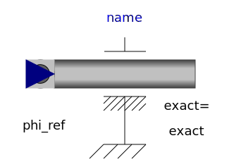
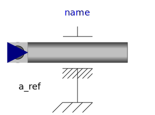
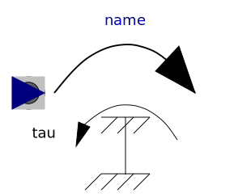
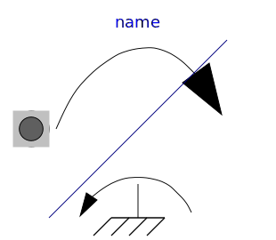
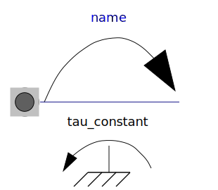
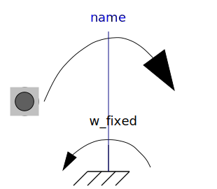

This package contains ideal sources to drive 1D mechanical rotational drive trains.
| Name | Description |
|---|---|
|  Position | Forced movement of a flange according to a reference angle signal |
| Forced movement of a flange according to a reference angular velocity signal | |
|  Accelerate | Forced movement of a flange according to an acceleration signal |
| Forced movement of a flange according to an angle, speed and angular acceleration signal | |
|  Torque | Input signal acting as external torque on a flange |
| Input signal acting as torque on two flanges | |
|  LinearSpeedDependentTorque | Linear dependency of torque versus speed |
|
|
Quadratic dependency of torque versus speed |
|  ConstantTorque | Constant torque, not dependent on speed |
|  ConstantSpeed | Constant speed, not dependent on torque |
| Constant torque, not dependent on speed |